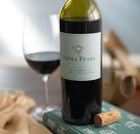
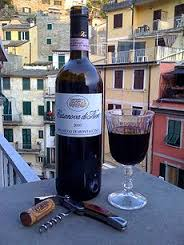
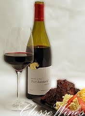
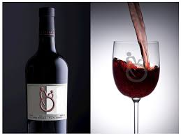
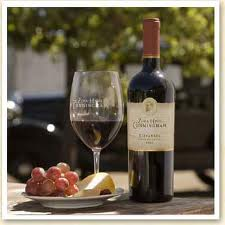
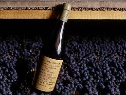

RED WINE
|  | MERLOTMerlot is a dark blue-coloured wine grape variety, that is used as both a blending grape and for varietal wines. The name Merlot is thought to be a diminutive of merle, the French name for the blackbird, probably a reference to the colour of the grape. Its softness and "fleshiness", combined with its earlier ripening, makes Merlot a popular grape for blending with the sterner, later-ripening Cabernet Sauvignon, which tends to be higher in tannin.
|
|  | SANGIOVESESangiovese is a red Italian wine grape variety whose name derives from the Latin sanguis Jovis, "the blood of Jove".Though it is the grape of most of central Italy from Romagna down to Lazio, Campania and Sicily, outside Italy it is most famous as the only component of Brunello di Montalcino and Rosso di Montalcino and the main component of the blend Chianti, Carmignano, Vino Nobile di Montepulciano and Morellino di Scansano, although it can also be used to make varietal wines such as Sangiovese di Romagna and the modern "Super Tuscan" wines like Tignanello. |
|  | SYRAH/SHIRAZSyrah (also known as Shiraz) is a dark-skinned grape variety grown throughout the world and used primarily to produce red wine. DNA profiling in 1999 found Syrah to be the offspring of two obscure grapes from south-eastern France, Dureza andMondeuse blanche. The style and flavour profile of wines made from Syrah is influenced by the climate where the grapes are grown with moderate climates tending to produce medium to full-bodied wines with medium-plus to high levels of tannins and flavours of blackberry, mint and black pepper notes. In hot climates, Syrah is more consistently full-bodied with softer tannin, jammier fruit and spice notes of liquorice, anise and earthy leather. In many regions the acidity and tannin levels of Syrah allows the wines produced from the grape to have favourable aging potential. |
 |
CABERNET SAUVIGNONCabernet Sauvignon is the world most famous red wine grape. Powerful and recognizable aroma of black currants. Ages extremely well in the bottle, developing subtle flavour compounds. Cabernet Sauvignon is responsible for the great red Bordeaux wines of France, excellent red wines from California and many other states and countries including Australia and Chile. This wine can be somewhat rough due to the high tannins when young. Cabernet Sauvignon possesses extreme depth, richness, concentration and longevity. Great Cabernet needs both oak and bottle aging to bring it into harmony. |
 |
PINOT NOIRPinot Noir is the grape variety exclusively responsible for red Burgundy. The vine does better in cooler climates since the fruit ripens relatively early. Fruity at the core, essences like strawberry, cherry, and plum mingle with notes of sandalwood, spice, and flowers. The Pinot Noir grape is responsible for the great red wines of Burgundy in France and also produced in California and Oregon as the varietal Pinot Noir. Lighter in body and far less tannic than Cabernet Sauvignon, Merlot, or Zinfandel, as well as lighter in color, Pinot Noir is lush and soft with a silky texture. Of all the classic wine grapes, Pinot Noir is the most difficult to make into wine, as it is very sensitive to climate changes. |
|  | MALBECMalbec originates from the Bordeaux region of France. It has become Argentina's signature grape. Distinguished by plummy dark-fruit flavors and earthy tannins for a medium to full-bodied wine |
|  |
ZINFANDELDeep ruby red or purple Red zinfandels range from fruity with light to medium body, to rich and powerful. Rich berry, black cherry, and plum aroma with a crisp refreshing mouthfeel. Zinfandel is a versatile wine produced almost exclusively in California, where some vines are more than 100 years old. Zinfandel is a full-bodied wine capable of long aging with full tannins. Zinfandel can also be made into a light style, slightly sweet wine called White Zinfandel. A Port style wine is sometimes produced from the Zinfandel grape. |
|  | AMARONEAmarone is produced by using the ripest grapes that are dried to concentrate their flavour using a special process known as recioto. Whole bunches of grapes are spread on bamboo mats and dried for several months. The grapes shrivel, which concentrates their sugar and flavours. Some Amorone are aged for five years before being released. The result is a very strong, dry wine with a raisins flavour, which has a very high alcohol content. |